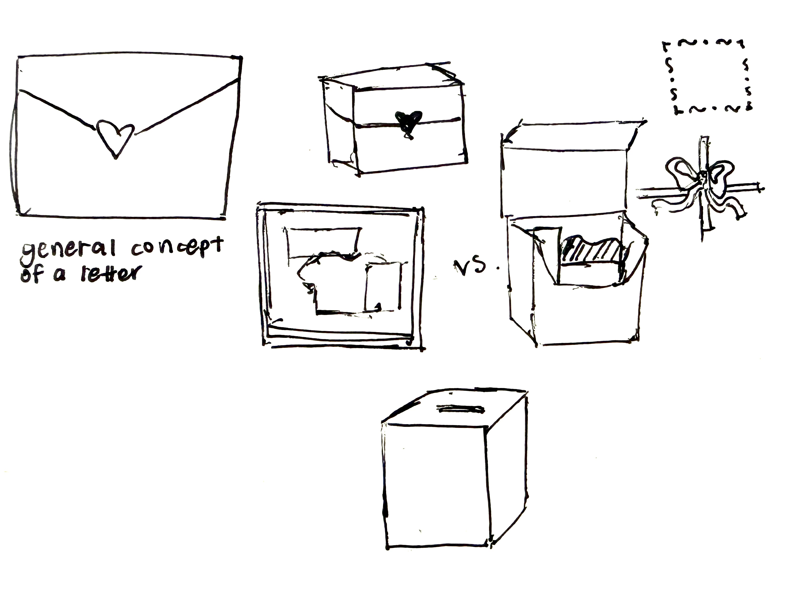
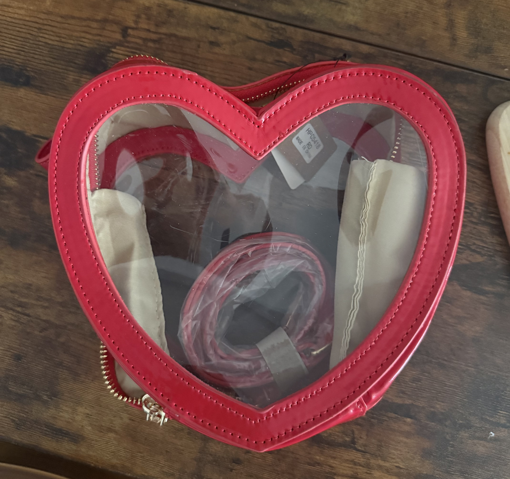

i feel like because the objects i chose for this project are very connected to community and the people around me, i wanted
my time capsule to be kind of mysterious but also intimate at the same time; i wanted to make it feel like a love letter, as
a lot of the content in the capsule is of letters from my friends and family.

i wanted to think of the way one would interact with my time capsule, how they would open it, in what way it would be presented.
i wanted to incorporate some sort of fabric, either through tying something or holding the pieces together, or even as a cushion for my objects to lay on.
my original inspiration was a purse i got as a gift once, a clear heart that allows you to see what's inside.

as this failed, i started trying to mindlessly see what other forms aside from a box i could experiment with, so i folded one of my plane tickets to make it
look like a flower, as i thought maybe everything could turn into a bouquet. realized immediately i cannot bring myself to fold any of these objects.
my original plan was to have a silver box that had a slot at the top to be able to continue inserting letters, tickets, photos, etc. into my capsule, but
as i actually iterated it i felt really uneasy with both how it looked as well as how not personal it felt. i then decided to take up a shoe box i had and paint it white,
and through that create the invitation / feeling of a letter. i do feel as though i can continue iterating on more decorations and ways to make it more myself.
through tying it, i invite the person to untie it and interact with it personally, especially when they tie it back again; it will never be the same as how it was found.
additionally, the way the box is wrapped reminds me of the way lunch boxes are packed by family, or how a fabric can wrap personal items.
i feel like this part was the more fun / exciting in my head, but when i actually started prototyping it, it was when i struggled the most. i felt
very uninspired this week for some reason and now it kind of feels unfinished
and still not personal enough to me, and i want to continue iterating on this. hopefully by part three i can have a more intimate, more developed
capsule that i'm happy with.